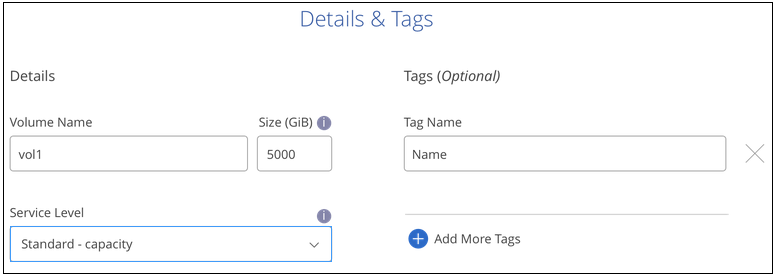
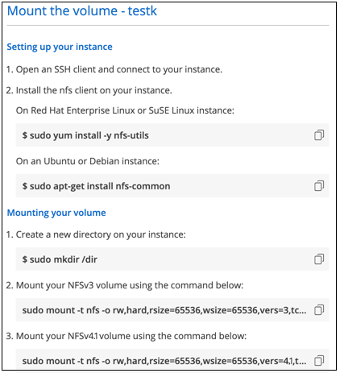

Request doc changes
Request doc changes Edit this page
Edit this page Learn how to contribute
Learn how to contributeManaging Cloud Volumes Service for AWS
Contributors
Cloud Manager enables you to create cloud volumes based on your Cloud Volumes Service for AWS subscription. You can also discover cloud volumes that you have already created from the Cloud Volumes Service interface and add them to a working environment.

|
With the launch of Amazon FSx for ONTAP, you can no longer create new CVS for AWS working environments in Cloud Manager. However, if you had previously added CVS for AWS working environments to Cloud Manager, you can continue to create and manage volumes. |
Create cloud volumes
For configurations where volumes already exist in the Cloud Volumes Service working environment you can use these steps to add new volumes.
For configurations where no volumes exist, you can create your first volume directly from Cloud Manager after you have set up your Cloud Volumes Service for AWS subscription. In the past, the first volume had to be created directly in the Cloud Volumes Service user interface.
-
If you want to use SMB in AWS, you must have set up DNS and Active Directory.
-
When planning to create an SMB volume, you must have a Windows Active Directory server available to which you can connect. You will enter this information when creating the volume. Also, make sure that the Admin user is able to create a machine account in the Organizational unit (OU) path specified.
-
You will need this information when creating the first volume in a new region/working environment:
-
AWS account ID: A 12-digit Amazon account identifier with no dashes. To find your account ID, refer to this AWS topic.
-
Classless Inter-Domain Routing (CIDR) Block: An unused IPv4 CIDR block. The network prefix must range between /16 and /28, and it must also fall within the ranges reserved for private networks (RFC 1918). Do not choose a network that overlaps your VPC CIDR allocations.
-
-
Select a CVS for AWS working environment and click Add New Volume.

-
If you are adding the first volume to the working environment in the region, you have to add AWS networking information.
-
Enter the IPv4 range (CIDR) for the region.
-
Enter the 12-digit AWS account ID (with no dashes) to connect your Cloud Volumes account to your AWS account.
-
Click Continue.

-
-
The Accepting Virtual Interfaces page describes some steps you will need to perform after you add the volume so that you are prepared to complete that step. Just click Continue again.
-
In the Details & Tags page, enter details about the volume:
-
Enter a name for the volume.
-
Specify a size within the range of 100 GiB to 90,000 GiB (equivalent to 88 TiBs).
-
Specify a service level: Standard, Premium, or Extreme.
-
Enter one or more tag names to categorize the volume if you want.
-
Click Continue.

-
-
In the Protocol page, select NFS, SMB, or Dual Protocol and then define the details. Required entries for NFS and SMB are shown in separate sections below.
-
In the Volume Path field, specify the name of the volume export you will see when you mount the volume.
-
If you select Dual-protocol you can select the security style by selecting NTFS or UNIX. Security styles affect the file permission type used and how permissions can be modified.
-
UNIX uses NFSv3 mode bits, and only NFS clients can modify permissions.
-
NTFS uses NTFS ACLs, and only SMB clients can modify permissions.
-
-
For NFS:
-
In the NFS Version field, select NFSv3, NFSv4.1, or both depending on your requirements.
-
Optionally, you can create an export policy to identify the clients that can access the volume. Specify the:
-
Allowed clients by using an IP address or Classless Inter-Domain Routing (CIDR).
-
Access rights as Read & Write or Read Only.
-
Access protocol (or protocols if the volume allows both NFSv3 and NFSv4.1 access) used for users.
-
Click + Add Export Policy Rule if you want to define additional export policy rules.
The following image shows the Volume page filled out for the NFS protocol:

-
-
-
For SMB:
-
You can enable SMB session encryption by checking the box for SMB Protocol Encryption.
-
You can integrate the volume with an existing Windows Active Directory server by completing the fields in the Active directory section:
Field Description DNS Primary IP Address
The IP addresses of the DNS servers that provide name resolution for the SMB server. Use a comma to separate the IP addresses when referencing multiple servers, for example, 172.31.25.223, 172.31.2.74..
Active Directory Domain to join
The FQDN of the Active Directory (AD) domain that you want the SMB server to join.
When using AWS Managed Microsoft AD, use the value from the "Directory DNS name" field.SMB Server NetBIOS name
A NetBIOS name for the SMB server that will be created.
Credentials authorized to join the domain
The name and password of a Windows account with sufficient privileges to add computers to the specified Organizational Unit (OU) within the AD domain.
Organizational Unit
The organizational unit within the AD domain to associate with the SMB server. The default is CN=Computers for connections to your own Windows Active Directory server.
If you configure AWS Managed Microsoft AD as the AD server for the Cloud Volumes Service, you should enter OU=Computers,OU=corp in this field.The following image shows the Volume page filled out for the SMB protocol:


You should follow the guidance on AWS security group settings to enable cloud volumes to integrate with Windows Active Directory servers correctly. See AWS security group settings for Windows AD servers for more information.
-
-
In the Volume from Snapshot page, if you want this volume to be created based on a snapshot of an existing volume, select the snapshot from the Snapshot Name drop-down list.
-
In the Snapshot Policy page, you can enable Cloud Volumes Service to create snapshot copies of your volumes based on a schedule. You can do this now or edit the volume later to define the snapshot policy.
See Creating a snapshot policy for more information about snapshot functionality.
-
Click Add Volume.
The new volume is added to the working environment.
If this is the first volume created in this AWS subscription, you need to launch the AWS Management Console to accept the two virtual interface that will be used in this AWS region to connect all your cloud volumes. See the NetApp Cloud Volumes Service for AWS Account Setup Guide for details.
You must accept the interfaces within 10 minutes after clicking the Add Volume button or the system may time out. If this happens, email cvs-support@netapp.com with your AWS Customer ID and NetApp Serial Number. Support will fix the issue and you can restart the onboarding process.
Then continue with Mounting the cloud volume.
Mount the cloud volume
You can mount a cloud volume to your AWS instance. Cloud volumes currently support NFSv3 and NFSv4.1 for Linux and UNIX clients, and SMB 3.0 and 3.1.1 for Windows clients.
Note: Please use the highlighted protocol/dialect supported by your client.
-
Open the working environment.
-
Hover over the volume and click Mount the volume.
NFS and SMB volumes display mount instructions for that protocol. Dual-protocol volumes provide both sets of instructions.
-
Hover over the commands and copy them to your clipboard to make this process easier. Just add the destination directory/mount point at the end of the command.
NFS example:

The maximum I/O size defined by the
rsizeandwsizeoptions is 1048576, however 65536 is the recommended default for most use cases.Note that Linux clients will default to NFSv4.1 unless the version is specified with the
vers=<nfs_version>option.SMB example:

-
Connect to your Amazon Elastic Compute Cloud (EC2) instance by using an SSH or RDP client, and then follow the mount instructions for your instance.
After completing the steps in the mount instructions, you have successfully mounted the cloud volume to your AWS instance.
Managing existing volumes
You can manage existing volumes as your storage needs change. You can view, edit, restore, and delete volumes.
-
Open the working environment.
-
Hover over the volume.

-
Manage your volumes:
Task Action View information about a volume
Select a volume, and then click Info.
Edit a volume (including snapshot policy)
-
Select a volume, and then click Edit.
-
Modify the volume’s properties and then click Update.
Get the NFS or SMB mount command
-
Select a volume, and then click Mount the volume.
-
Click Copy to copy the command(s).
Create a Snapshot copy on demand
-
Select a volume, and then click Create a Snapshot copy.
-
Change the snapshot name, if needed, and then click Create.
Replace the volume with the contents of a Snapshot copy
-
Select a volume, and then click Revert volume to Snapshot.
-
Select a Snapshot copy and click Revert.
Delete a Snapshot copy
-
Select a volume, and then click Delete a Snapshot copy.
-
Select the Snapshot copy you want to delete and click Delete.
-
Click Delete again to confirm.
Delete a volume
-
Unmount the volume from all clients:
-
On Linux clients, use the
umountcommand. -
On Windows clients, click Disconnect network drive.
-
-
Select a volume, and then click Delete.
-
Click Delete again to confirm.
-
Remove Cloud Volumes Service from Cloud Manager
You can remove a Cloud Volumes Service for AWS subscription and all existing volumes from Cloud Manager. The volumes are not deleted, they are just removed from the Cloud Manager interface.
-
Open the working environment.

-
Click the
 button at the top of the page and click Remove Cloud Volumes Service.
button at the top of the page and click Remove Cloud Volumes Service. -
In the confirmation dialog box, click Remove.
Manage Active Directory configuration
If you change your DNS servers or Active Directory domain, you need to modify the SMB server in Cloud Volumes Services so that it can continue to serve storage to clients.
You can also delete the link to an Active Directory if you no longer need it.
-
Open the working environment.
-
Click the
button at the top of the page and click Manage Active Directory. -
If no Active Directory is configured, you can add one now. If one is configured, you can modify the settings or delete it using the
button. -
Specify the settings for the Active Directory that you want to join:
Field Description DNS Primary IP Address
The IP addresses of the DNS servers that provide name resolution for the SMB server. Use a comma to separate the IP addresses when referencing multiple servers, for example, 172.31.25.223, 172.31.2.74.
Active Directory Domain to join
The FQDN of the Active Directory (AD) domain that you want the SMB server to join.
When using AWS Managed Microsoft AD, use the value from the "Directory DNS name" field.SMB Server NetBIOS name
A NetBIOS name for the SMB server that will be created.
Credentials authorized to join the domain
The name and password of a Windows account with sufficient privileges to add computers to the specified Organizational Unit (OU) within the AD domain.
Organizational Unit
The organizational unit within the AD domain to associate with the SMB server. The default is CN=Computers for connections to your own Windows Active Directory server.
If you configure AWS Managed Microsoft AD as the AD server for the Cloud Volumes Service, you should enter OU=Computers,OU=corp in this field. -
Click Save to save your settings.